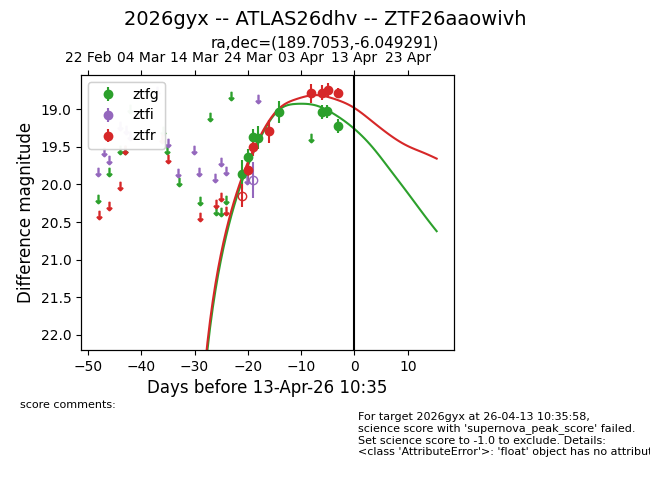
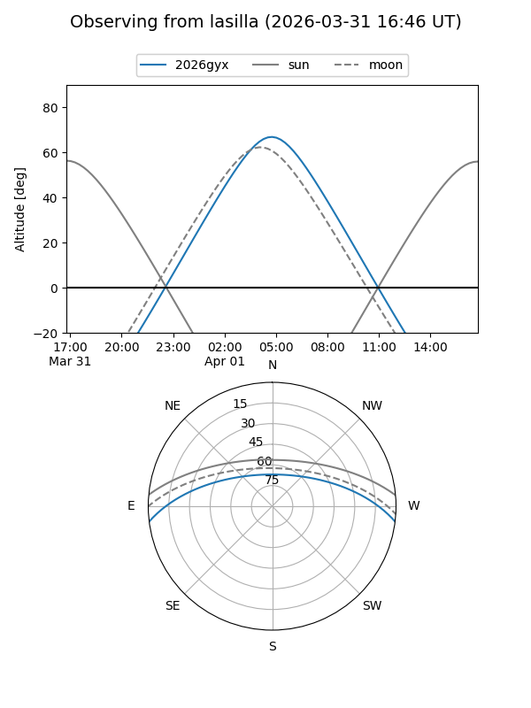
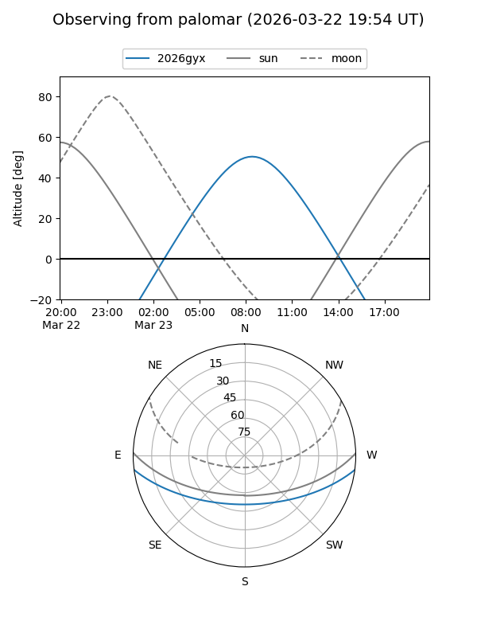
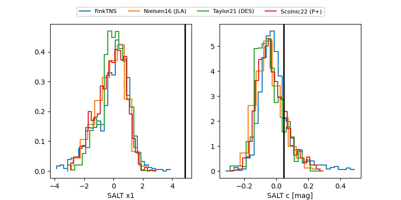

2026gyx
Target 2026gyx at 2026-04-13 10:48
Aliases and brokers:
FINK: link
Lasair: link
ALeRCE: link
TNS: link
YSE: link
alt names
ZTF26aaowivh (ztf,fink_ztf)
2026gyx (tns,yse)
ATLAS26dhv (atlas)
Coordinates:
equatorial (ra, dec) = 189.7053,-6.04929
equatorial (HMS+DMS) = 12:38:49.28,-06:02:57.45
galactic (l, b) = (297.2150,+56.68234)
Flags:
Photometry:
last ztfg=19.22, ztfr=18.79
8 ztfg, 7 ztfr detections
Lightcurve

Visibility


Additional plots
